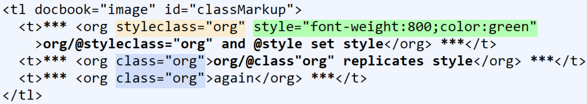
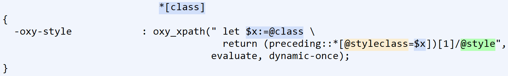
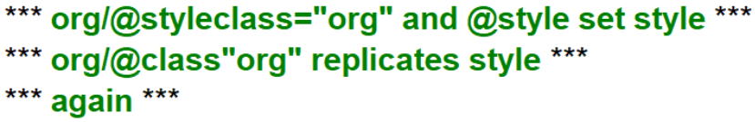

@class — Authored class styles“Look Ma. No stylesheet changes” | ||
| --Test Subject | ||
An early design principle was, “Hands off the @class attribute. That's for user control.” Recently, an approach was implemented that allows authors to define classes and associate specific CSS styles, all within a document.
The @style attribute maps to the oXml -oxy-style CSS property. This allows raw CSS to be passed to the CSS processor for the defined element.
Adding a @styleclass attribute on an element makes the @style value available for reuse. A little XPath handles the indirection from @class, through the preceding @styleclass, to @style:
Figure 11. @class markup
|  |
Figure 12. @class CSS
|  |
Figure 13. @class rendering
|  |